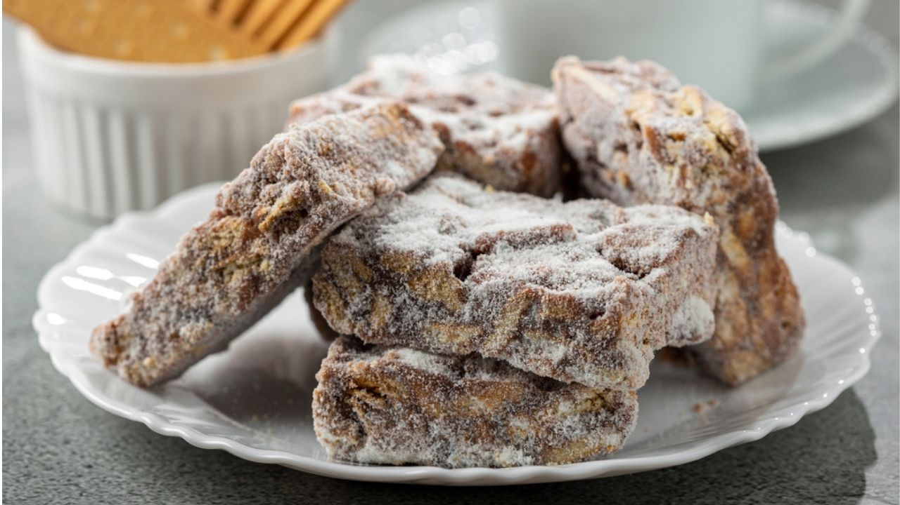

Palha italiana
Here, I will teach you how to make palha italiana, a sweet dessert that is very popular in Brazil.

Despite its name, as far as I know, palha italiana was invented in Brazil and has absolutely nothing to do with Italy. So, yeah, don't ask me how this name stuck.
Leaving the obscure etymology aside, this recipe is perfect for a comfy winter dessert and very easy to make too!
So, follow the steps below to try and make palha italiana yourself! I'm sure your friends and family will love it.
By the way, this recipe uses the same chocolate mixture from the first half of the brigadeiro recipe, so you can try both in one go if you want!
Ingredients:
- Condensed milk: 1 can (about 395g)
- Chocolate-flavored powder or cocoa powder: 3 tablespoons
- Butter or margerine
- Sweet-ish biscuits of your preference: 1 pack
- Sugar
How to make:
- First, switch on the stove and melt a tablespoon of margerine or butter in a medium-sized pot.
- Once it's melted, switch off the stove and empty the can of condensed milk into the pot.
- Next, throw 3 fairly generous tablespoons of the chocolate powder into the condensed milk and mix it well with a cooking spoon until all of the powder has dissolved.
- Switch on the stove again on medium heat and keep stirring the mixture to prevent it from sticking to the bottom of the pot.
- Keep stirring for about ten minutes until the chocolate starts to peel off the bottom of the pot by itself when you tilt it slightly.
- Once you reach this point, the brigadeiro is done! You can try it if you haven't made the actual brigadeiro recipe yet, but keep going and follow the steps below for the palha italiana.
- Now, for the palha italiana, take the biscuits and crush them to tiny crumbs or powder (whichever you prefer) with a pestle or any other crushing tool at your disposal in a bowl or mortar.
- Next, throw the crumbs or powder into the brigadeiro and stir with a cooking spoon until everything is well mixed.
- Transfer the mixture to a tray and use a moist spoon to spread it and even out the surface. Be careful: if the spoon is not moist, the chocolate will stick to it and you won't get anywhere.
- Take the tray to the fridge for about 30 minutes.
- After 30 minutes, take the tray out of the fridge and cut the mixture into cubes. The size of the cubes is up to you, depending on how many servings you want.
- Lastly, pour some sugar into a different tray or plate and roll your cubes around in it to give them a nice sugary white layer.
- And it's done! Enjoy!
I hope you liked this recipe!
You can find more delicious recipes on our main page. Check it out!